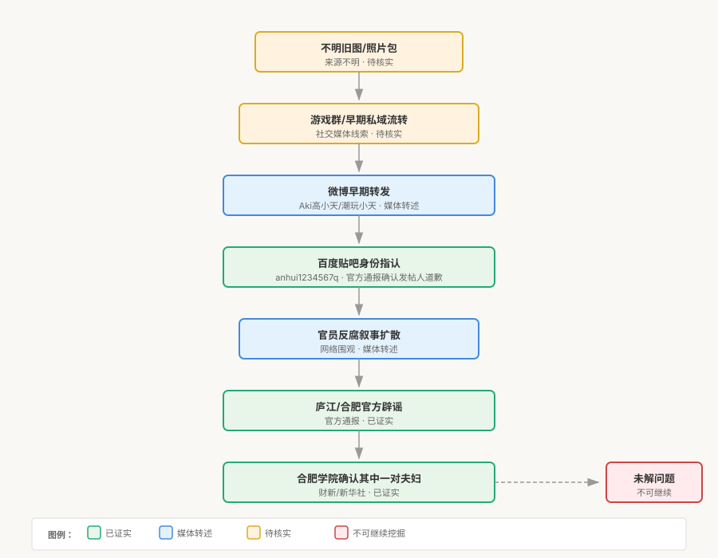
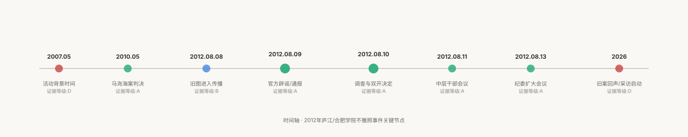
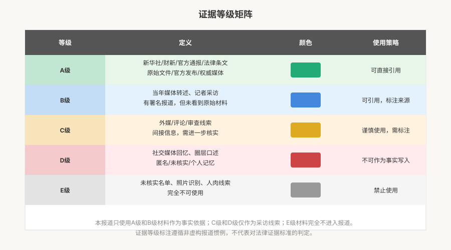

一、旧案如何重返公共视野
2012年8月，一组旧图从网络暗角流向公共视野。数日后，照片中的人被组织处分，而传播者、泄露者、错误指认者却消失在叙事之外。
2012年8月初，一组旧图在社交媒体上开始流传。公开报道称，相关图片数量约为181张，流传于多个色情网站，多张拍摄于2008年前后。但这些数据来自媒体综合报道，原始出处尚未核实，目前未取得原始材料。
关键转折发生在8月9日。百度贴吧上出现身份指认帖，将照片中人物与庐江县官员关联。当天，合肥市外宣办发布通报，否认照片中人物为庐江县委主要负责人，并公布公安局刑事科学技术研究所的检验意见。公开通报确认，发帖人随后道歉。但原始发帖和道歉帖尚未取得，完整的发布语境目前无法独立核实。
8月10日，合肥学院确认团委副书记汪昱为当事人之一。从截获照片到党委会决定双开，全程约11小时。汪昱及其妻子被开除党籍、开除公职。8月11日，学院召开中层干部会议宣布处理决定；8月13日，纪委扩大会议将其作为警示教育案例。
此后，事件迅速降温。公共叙事停在"双开"，未追问泄露责任。传播者、泄露者、错误指认者的身份和责任，消失在公共记录中。
十四年后，社交媒体上出现对该事件的回顾。这些回声不是事实结论，只作为本报道启动的线索。
二、旧图如何变成公共指认
公开报道称，2012年8月初，微博用户参与了旧图的早期转发，称图片来自游戏群。报道引述的数据称原微博转发323次、评论67次。但原微博已不可见，这些数据来自媒体报道而非平台原始记录，无法独立核实。
关键转折发生在百度贴吧。公开通报称，贴吧用户发布了身份指认帖，将照片中人物与庐江县官员关联。但原始发帖和道歉帖尚未取得，完整的发布语境目前无法独立核实。
从"像某官员"的视觉相似性判断，到"就是某官员"的公共指认，这一过程呈现出群体协作特征。但"像"的判断从何而来、由谁做出、如何被转化为具体身份绑定，公开资料中缺乏原始材料。

"官员不雅照"的标签为什么比"不雅照"传播更快？在反腐舆论背景下，政治标签为信息提供了合法性框架。但具体到本案，标签何时附着、由谁推动、是否存在组织化行为，目前均无法核实。
本报道不认定照片中人物的具体身份，也不对"像不像"做出任何判断。上述分析仅针对传播机制，不构成对任何个人的身份认定。
三、一次越辟越乱的辟谣
官方通报的结论——照片与庐江县委主要负责人不是同一人——可直接引用。但检验意见全文未公开，检验方法未说明，这属于公开资料中的缺口。
更具传播学意义的是语义错位。官方想否认的是"身份绑定"，但公众理解成了"照片是假的"。这种错位本身，加上辟谣声明引用了未经核实的外部来源，导致辟谣成为新的争议源。
据多家媒体报道，庐江发布官方微博在辟谣声明中，引用了长沙网一篇题为《昆明三对夫妻群P聚会》的内容。这一引用未经核实，导致两个次生传播事故：长沙的星辰在线要求修改声明并道歉，昆明的公安新闻办回应称与昆明无关。
但官方为何引用该来源、是否核实过、决策过程如何，目前尚未取得原始材料。
后续合肥学院确认汪昱为当事人，使得前期"照片是PS"的说法不攻自破。但这只说明，至少涉及汪昱的部分，照片内容并非"PS"，并不直接证实其他内容的真实性。
本报道不指控官方"故意撒谎"，只分析语义错位和证据引用不当的传播后果。
四、公开报道中的十一小时
据财新报道，2012年8月10日12:30，合肥学院截获照片并启动调查。公开报道给出的时间线显示：初步确认当事人，免职并上报，23:00形成调查结论，23:30党委会决定双开。全程约11小时。

这一时间线来自财新报道的详细记录。但需要指出的是，财新是唯一详细记录该时间线的媒体，且目前尚未取得合肥学院的原始调查文件，无法独立核实11小时内的具体程序步骤。
11小时内完成从截获到双开，其速度本身值得采访核实。但速度不等于程序违法，也不等于程序合规。在缺乏原始材料的情况下，本报道只记录事实，不做判断。
本报道在此不做程序合法性的判断，只记录公开报道中的时间线和需要进一步核实的问题。
五、责任的不对称
在2012年8月的事件中，被传播者被公开处分，而传播者、泄露者、错误指认者却消失在公共叙事之外。
公开资料中，只有发帖人道歉被官方通报确认。其他传播者的身份和责任，目前无任何公开记录。泄露者是谁？谁将照片从私密空间提取并重新传播？错误指认者除发帖人外是否还有他人？这些问题没有公开答案，本报道也不尝试追查。
这种责任的不对称并非本案独有。在私密影像泄露事件中，被传播者往往成为公共审判的对象，而传播者、泄露者、错误指认者却隐秘消失。这背后有多种机制：公共注意力天然聚焦于"被看到的人"，机构处理机制倾向于快速回应公共事件，法律框架对私密影像泄露的保护存在不足。
2010年，南京马尧海因聚众淫乱罪被判处有期徒刑三年六个月。此案在2012年前后对相关圈层形成了刑事风险阴影。但马尧海案是刑事判决，而本案中的当事人受到的是组织处分。公开资料目前只支持"组织处分"的表述，不支持"当事人被刑事判决"的说法。
《中华人民共和国民法典》规定，自然人享有隐私权，任何组织或个人不得以刺探、侵扰、泄露、公开等方式侵害他人的隐私权。但在本案中，传播者、泄露者、错误指认者的法律责任是否被追究，目前没有任何公开信息。公共叙事最终停在"双开"，没有追问泄露责任。
六、证据台账

| 事实/线索 | 来源 | 等级 | 可写入程度 | 风险提示 |
|---|---|---|---|---|
| 微博用户早期传播线索 | 观察者网 [S1] | B | 可引用，标注来源 | 原微博已不可见，数据来自媒体转述 |
| 181张照片说法 | 观察者网 [S1] | B | 可引用，标注来源 | 原始出处待核实 |
| 贴吧发帖与道歉 | 合肥市外宣办通报 [S4] | A | 可直接引用 | 官方通报内容 |
| 合肥市公安技术检验意见 | 合肥市外宣办通报 [S4] | A | 可直接引用 | 检验意见全文未公开 |
| 星辰在线/昆明回应 | 新浪新闻 [S5][S6] | B | 可引用，标注来源 | 媒体报道 |
| 合肥学院处分时间线 | 财新网 [S2] | A | 可直接引用 | 唯一详细记录者，需交叉验证 |
| 马尧海案 | 财新网 [S8] | A | 可直接引用 | 历史案例，不直接套用 |
| 民法典隐私权条文 | 广州市人大官网 [S9] | A | 可直接引用 | 官方法律文本 |
| 辟谣声明引发次生传播 | 星辰在线/新浪新闻 [S5][S6] | B | 可引用，标注来源 | 涉及多方争议 |
| 社交媒体旧案回忆 | 社交媒体（2026年） | D | 不可作为事实写入 | 仅作为采访线索 |
七、仍未完成的追问
这不是一个适合继续围观私生活的事件。真正值得追问的是：
影像如何泄露？谁将照片从私密空间提取并重新传播？原始上传者是否被找到？
身份如何被错误绑定？从"长得像"到"就是"的转换机制是什么？标签何时附着、由谁推动？
机构如何快速处理？11小时内的处分程序具体如何完成？原始调查文件能否取得？
传播者为何消失？除发帖人道歉外，其他传播者、错误指认者是否被追责？
隐私权如何被保护？当事人的私密影像被公开后，泄露者与传播者的法律责任是否被追究？
为什么公共叙事停在"双开"？事件的公共讨论最终聚焦于组织处分，而泄露责任未被追问。
181张与2008年的原始依据是什么？这些数据来自何处？是否有更可靠的来源？
辟谣声明的决策过程是什么？官方为何引用未经核实的来源？决策机制如何？
报道的下一步应从采访与文件申请开始。但伦理边界始终不变：不展示、不描述、不传播任何不雅照片；不追踪当事人现状，不公开其隐私信息；不追查早期传播者的真实身份；不做人脸识别或身份比对。
八、资料来源与方法说明
本报道基于以下公开材料，按A/B/C/D/E五级证据体系分类：A级可直接引用，B级需标注来源，C/D级不可作为事实，E级禁止使用。
来源列表
- [S1] 观察者网：《合肥官方：艳照男子非庐江县委书记》(2012-08-10) https://www.guancha.cn/indexnews/2012_08_10_90084.shtml — 综合报道，包含多方信息，需交叉验证
- [S2] 财新网：《合肥学院团委副书记及其妻因不雅照被"双开"》(2012-08-13) https://china.caixin.com/2012-08-13/100423589.html — 严肃财经媒体报道，可信度较高，为唯一详细时间线来源
- [S3] 新浪财经（转载）：《安徽艳照事件两名涉事夫妇被双开》(2012-08-14) https://finance.sina.cn/sa/2012-08-14/detail-ikftssan6727743.d.html — 转载页，非原始新华社或经济观察网页面
- [S4] 荆楚网/合肥市外宣办：《"庐江县委书记不雅照"发帖人道歉》(2012-08-10) https://news.cnhubei.com/news/xw/gn/201208/t2182681.shtml — 官方通报，检验意见全文未公开
- [S5] 新浪湖南/星辰在线：《星辰在线请"庐江发布"修改声明并道歉》(2012-08-10) https://hunan.sina.com.cn/news/s/2012-08-10/090211205.html
- [S6] 新浪新闻：《庐江辟谣引两地喊冤》(2012-08-11) https://news.sina.cn/sa/2012-08-11/detail-ikmyaawa4113793.d.html
- [S7] 最高人民检察院：《中华人民共和国刑法（第301条）》(2018-02-06) https://www.spp.gov.cn/spp/fl/201802/t20180206_364975.shtml
- [S8] 财新网：《马尧海案》(2010-05-20) https://china.caixin.com/2010-05-20/100145781.html — 历史案例，用于法律背景对照
- [S9] 广州市人大常委会：《中华人民共和国民法典（隐私权条文）》(2020-12-18) https://www.gzrd.gov.cn/ztzl/mfdzt/yd/202012/t20201218_77665659.html
方法说明
- 所有内容基于公开报道与法律文本，未核实信息均已标注
- 不将社交媒体回忆、圈层口述写成已核实事实
- 不展示、不描述、不传播任何不雅照片
- 不追踪当事人现状，不公开隐私信息
- 不追查早期传播者真实身份
- 不做人脸识别或身份比对
注：本页面仅做短句引用和概括，来源链接保留供查阅。不嵌入媒体原图，不全文复制新闻报道。